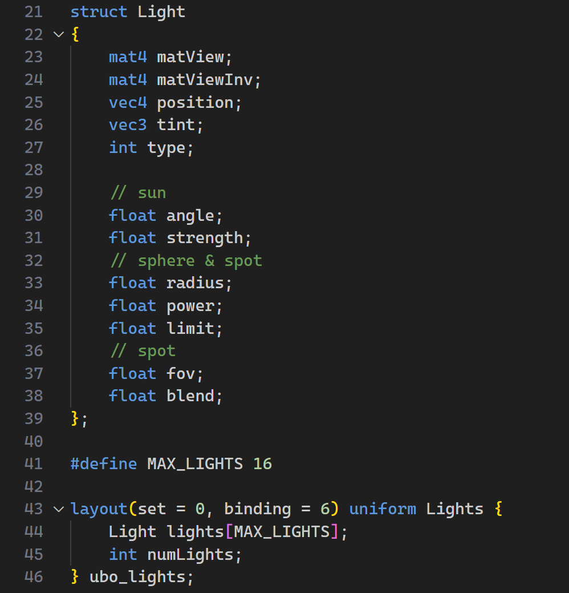
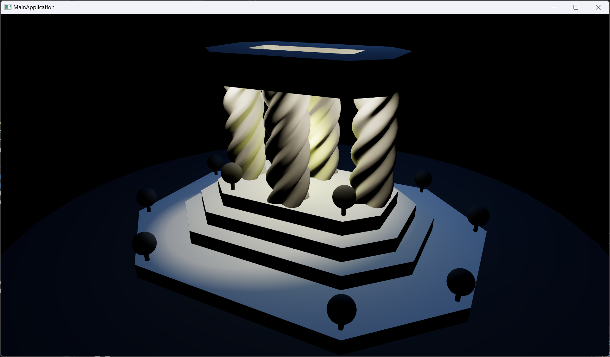

The scan is done using Scaniverse on my iPhone 15 Pro. The model is then processed in Blender following several tutorials on YouTube.
For the new "LIGHT" type, I supported a new Light class that inherits from SceneObj so that it can be parsed from the scene json.
To support multiple lights and light referred by different nodes, I used a similar way with the Mesh class to traverse the scene graph every frame to extract all LightInstances.
A LightInstance would contain a shared pointer to a Light object and a transformation matrix to transform the light to the world space.
I left the power and tint attributes of each light as non-premultiplied, as the computation in shader is more straightforward and the performance impact is negligible.
To pass light data to the shader, I used a uniform buffer to store all light data and bind it to the shader.

For every model, I iterate through all LightInstances and calculate the direct lighting contribution from each light.
Here is a screenshot showing the scene with Lambertian materials under sphere, spot, and sun lights:

Here is a screen recording showing the scene running in real-time under different materials and lights:In the video, the soldier model on the left is using a Lambertian material, and the one on the right is using a PBR material. The scene is lit with a dynamic point light (rotating around models), a spot light, and a sun light.
As we can see, two models have different shading behaviors under different lights. The Lambertian material is more diffuse and less reflective, while the PBR material is more reflective. I haven't checked the correctness of my PBR implementation, but it looks okay to me.
For performance analysis, I set up my scene using [1, 2, 4, 8, 16, 32, 64, 128, 256, 511] sphere lights and measured the frame rate. Here is the graph showing the performance impact of adding additional lights to the scene:
After summarizing the data in the following table:| Light Source Count | Average Frame Time (us) | Avg Frame Time / Light Count (us/light) |
|---|---|---|
| 1 | 385.996 | 385.996 |
| 2 | 403.923 | 201.962 |
| 4 | 446.864 | 111.716 |
| 8 | 550.047 | 68.756 |
| 16 | 839.341 | 52.459 |
| 32 | 1393.075 | 43.534 |
| 64 | 2564.878 | 40.076 |
| 128 | 5797.862 | 45.295 |
| 256 | 12944.406 | 50.564 |
| 511 | 26972.488 | 52.784 |
And here is a line graph showing the relationship between the light source count and the average frame time. Both axes are on a logarithmic scale to better display the data across the wide range of values.
As you can see in the graph, as the number of lights increases, the average frame time increases almost linearly. The average frame time per light source is around 50us after light count reaches 16, where we can consider the bottleneck to be light computation.
Considering a real-time application, we would expect the frame rate to be around 60fps, which means the frame time should be around 16.67ms. In my estimation, my viewer can handle around 300 light sources at a reasonable frame rate (60fps).
I feel like the description of the assignment is a bit vague. I understand that this is a more advanced class, and the unknown is part of the learning process and it resembles the real-world scenario of real-time graphics. However, I think it would be helpful to have more detailed walk through to guide us through the assignment.
Also, I regret not having enough time to implement the shadow feature. Job hunting and interviews have taken up a lot of my time, and I have to prioritize them over the assignment. I hope I can make up for it in my final project.